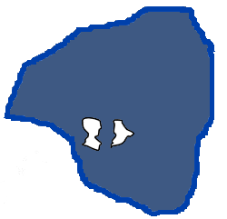
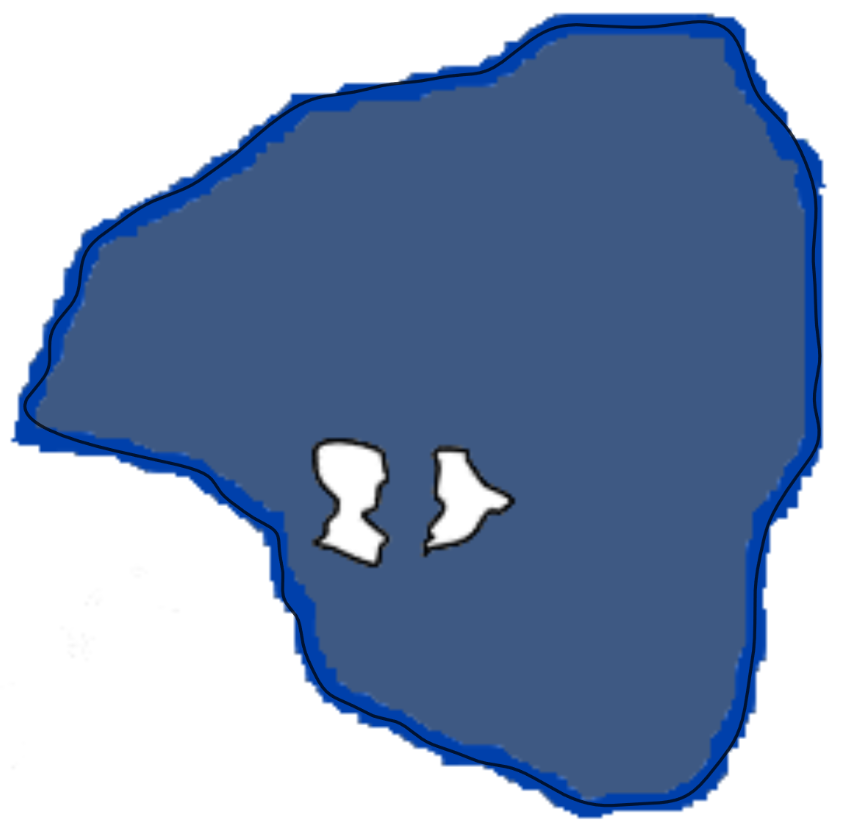

2019年4月19日～2019年4月21日、そして2019年10月8日～2019年10月14日に行い、その後完全に放置していた作業についてここにまとめる。
「スキュリオーティエ叙事詩 - 藩国解説」にある地図がこちら。
この太い青線を通るような外周の概形を加えたものがこちら。
それを 9 つの区域に分割し、その面積比を測ったところ、871ピクセルで表現すると面積比が忠実に再現できることが分かったので、その通りにビットマップで分割したものがこちら。

2019年9月30日に「daunou.ar という名の湖」というタスクを考えていて、今日それに白羽の矢が立ったからである。
藍taupwo から dáp「唇」とdaupha「限界、端」が得られているのと同様、湖の名前はすり減りきった dhán であって、一方「虎」は dhauna なのかなぁ。
ちなみにこれってどっちの湖なんだろう。ダイスロール。右。